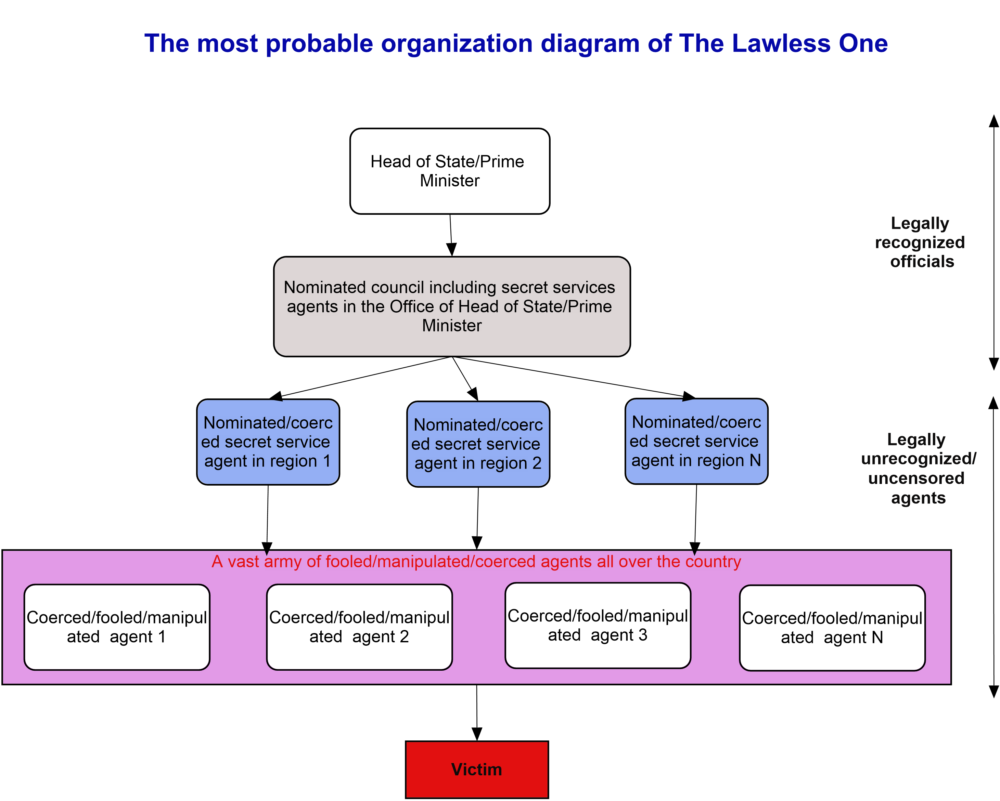
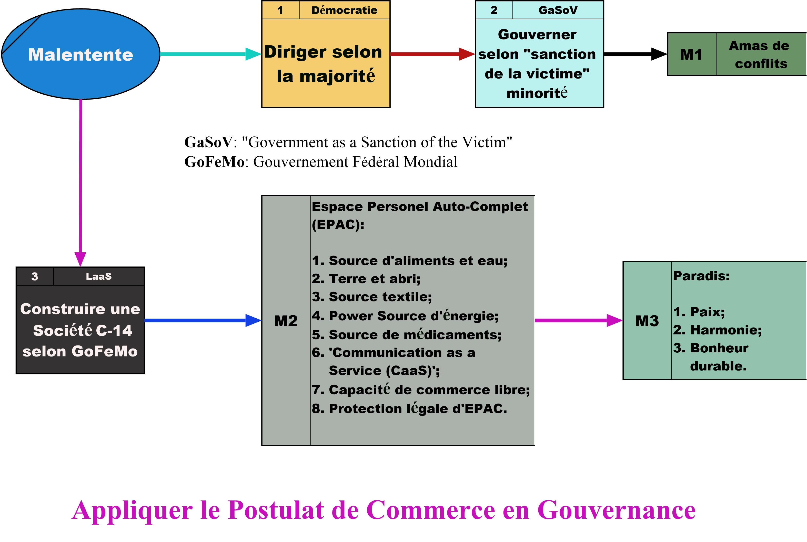

<!DOCTYPE html>
<html>
    <head>
        <meta charset="utf-8">
        <meta name="viewport" content="width=device-width, initial-scale=1">
        <link rel="shortcut icon" type="image/x-icon" href="favicon.svg" />
        <meta name="description" content="Since each person will ultimately own a cell phone, named “HoFi (Home Finances)”, Laastras organization harnesses the power behind software technologies to guarantee your share on all resources that support human existence in your country, first, and then, in the world. Our country and the world become an enterprise in which all of us citizens have equal shares. Our major brands are: “LaasEgrocery” (nutrition), “LaasEcard” (a cell phone named HoFi, i.e., Home Finances), “LaasElogistics”, and “LaasEalliances”">
    
        <!-- // 35 characters -->
        <meta property="og:title" content="Laastras - The Lawless One" />
        <meta property="og:url" content="https://mwambaro.github.io/assets/the-lawless-one.html" />
        <!-- // 65 characters -->
        <meta property="og:description" content="Nutrition.Equality.Financial Security.Capitalism Order" />
        <!-- // Image type PNG or JPG size less than 300KB and minimum pixels 300x200 -->
        <meta property="og:image" content="https://am3pap006files.storage.live.com/y4mdt3IhrxVWDL0QWEw8F_DBc__ZRaoWOmwbo582qR3PSHpk2jS-UqS0u-KqZX9rz64ACUmg8RTcCGDIIXDcG4WTREyzREDDjo7mBOIqqc1SJgG6b6hMXQIl-dEjcyrXYbW8EBsxrZAQDPju63vd8OxUo8VRo6nxzUfa667yzyV84gV2eKbMYSGYcisYSQ-n9E9?width=2922&height=2342&cropmode=none" />
        <!-- // see https://opengraphprotocol.org/#types -->
        <meta property="og:type" content="website" />
        <!-- // Examples: en_US, en_GB. => locale_TERRITORRY -->
        <meta property="og:locale" content="en_US" />

        <title>Laastras - About the Lawless One</title>

        <!-- Fonts -->
        <link href="https://fonts.googleapis.com/css2?family=Nunito:wght@400;600;700&display=swap" rel="stylesheet">

        <link rel="stylesheet" href="https://cdn.jsdelivr.net/npm/bootstrap@5.0.2/dist/css/bootstrap.min.css" integrity="sha384-EVSTQN3/azprG1Anm3QDgpJLIm9Nao0Yz1ztcQTwFspd3yD65VohhpuuCOmLASjC" crossorigin="anonymous" id="bootstrap_css">

        <!-- Styles -->
        <style>
            /*! normalize.css v8.0.1 | MIT License | github.com/necolas/normalize.css */html{line-height:1.15;-webkit-text-size-adjust:100%}body{margin:0}a{background-color:transparent}[hidden]{display:none}html{font-family:system-ui,-apple-system,BlinkMacSystemFont,Segoe UI,Roboto,Helvetica Neue,Arial,Noto Sans,sans-serif,Apple Color Emoji,Segoe UI Emoji,Segoe UI Symbol,Noto Color Emoji;line-height:1.5}*,:after,:before{box-sizing:border-box;border:0 solid #e2e8f0}a{color:inherit;text-decoration:inherit}svg,video{display:block;vertical-align:middle}video{max-width:100%;height:auto}.bg-white{--bg-opacity:1;background-color:#fff;background-color:rgba(255,255,255,var(--bg-opacity))}.bg-gray-100{--bg-opacity:1;background-color:#f7fafc;background-color:rgba(247,250,252,var(--bg-opacity))}.border-gray-200{--border-opacity:1;border-color:#edf2f7;border-color:rgba(237,242,247,var(--border-opacity))}.border-t{border-top-width:1px}.flex{display:flex}.grid{display:grid}.hidden{display:none}.items-center{align-items:center}.justify-center{justify-content:center}.font-semibold{font-weight:600}.h-5{height:1.25rem}.h-8{height:2rem}.h-16{height:4rem}.text-sm{font-size:.875rem}.text-lg{font-size:1.125rem}.leading-7{line-height:1.75rem}.mx-auto{margin-left:auto;margin-right:auto}.ml-1{margin-left:.25rem}.mt-2{margin-top:.5rem}.mr-2{margin-right:.5rem}.ml-2{margin-left:.5rem}.mt-4{margin-top:1rem}.ml-4{margin-left:1rem}.mt-8{margin-top:2rem}.ml-12{margin-left:3rem}.-mt-px{margin-top:-1px}.max-w-6xl{max-width:72rem}.min-h-screen{min-height:100vh}.overflow-hidden{overflow:hidden}.p-6{padding:1.5rem}.py-4{padding-top:1rem;padding-bottom:1rem}.px-6{padding-left:1.5rem;padding-right:1.5rem}.pt-8{padding-top:2rem}.fixed{position:fixed}.relative{position:relative}.top-0{top:0}.right-0{right:0}.shadow{box-shadow:0 1px 3px 0 rgba(0,0,0,.1),0 1px 2px 0 rgba(0,0,0,.06)}.text-center{text-align:center}.text-gray-200{--text-opacity:1;color:#edf2f7;color:rgba(237,242,247,var(--text-opacity))}.text-gray-300{--text-opacity:1;color:#e2e8f0;color:rgba(226,232,240,var(--text-opacity))}.text-gray-400{--text-opacity:1;color:#cbd5e0;color:rgba(203,213,224,var(--text-opacity))}.text-gray-500{--text-opacity:1;color:#a0aec0;color:rgba(160,174,192,var(--text-opacity))}.text-gray-600{--text-opacity:1;color:#718096;color:rgba(113,128,150,var(--text-opacity))}.text-gray-700{--text-opacity:1;color:#4a5568;color:rgba(74,85,104,var(--text-opacity))}.text-gray-900{--text-opacity:1;color:#1a202c;color:rgba(26,32,44,var(--text-opacity))}.underline{text-decoration:underline}.antialiased{-webkit-font-smoothing:antialiased;-moz-osx-font-smoothing:grayscale}.w-5{width:1.25rem}.w-8{width:2rem}.w-auto{width:auto}.grid-cols-1{grid-template-columns:repeat(1,minmax(0,1fr))}@media (min-width:640px){.sm\:rounded-lg{border-radius:.5rem}.sm\:block{display:block}.sm\:items-center{align-items:center}.sm\:justify-start{justify-content:flex-start}.sm\:justify-between{justify-content:space-between}.sm\:h-20{height:5rem}.sm\:ml-0{margin-left:0}.sm\:px-6{padding-left:1.5rem;padding-right:1.5rem}.sm\:pt-0{padding-top:0}.sm\:text-left{text-align:left}.sm\:text-right{text-align:right}}@media (min-width:768px){.md\:border-t-0{border-top-width:0}.md\:border-l{border-left-width:1px}.md\:grid-cols-2{grid-template-columns:repeat(2,minmax(0,1fr))}}@media (min-width:1024px){.lg\:px-8{padding-left:2rem;padding-right:2rem}}@media (prefers-color-scheme:dark){.dark\:bg-gray-800{--bg-opacity:1;background-color:#2d3748;background-color:rgba(45,55,72,var(--bg-opacity))}.dark\:bg-gray-900{--bg-opacity:1;background-color:#1a202c;background-color:rgba(26,32,44,var(--bg-opacity))}.dark\:border-gray-700{--border-opacity:1;border-color:#4a5568;border-color:rgba(74,85,104,var(--border-opacity))}.dark\:text-white{--text-opacity:1;color:#fff;color:rgba(255,255,255,var(--text-opacity))}.dark\:text-gray-400{--text-opacity:1;color:#cbd5e0;color:rgba(203,213,224,var(--text-opacity))}.dark\:text-gray-500{--tw-text-opacity:1;color:#6b7280;color:rgba(107,114,128,var(--tw-text-opacity))}}
        </style>

        <style>
            body {
                font-family: 'Nunito', 'Segoe UI', sans-serif;
            }
            a {
                color: blue
            }
        </style>
        
        <!-- https://www.w3schools.com/tags/att_script_integrity.asp -->
        <script src="https://code.jquery.com/jquery-3.6.3.min.js" integrity="sha384-Ft/vb48LwsAEtgltj7o+6vtS2esTU9PCpDqcXs4OCVQFZu5BqprHtUCZ4kjK+bpE" crossorigin="anonymous" id="jquery"></script>
        <script src="https://cdn.jsdelivr.net/npm/bootstrap@5.0.2/dist/js/bootstrap.bundle.min.js" integrity="sha384-MrcW6ZMFYlzcLA8Nl+NtUVF0sA7MsXsP1UyJoMp4YLEuNSfAP+JcXn/tWtIaxVXM" crossorigin="anonymous" id="bootstrap_js"></script>
        <script>
            function get_env()
            {
                let env = 'production';

                if(/^file:$/i.test(window.location.protocol))
                {
                    env = 'development';
                }

                return env;

            } // get_env

            function set_urls()
            {
                var env = get_env();
                var urls = {
                    bootstrap_css: {
                        development: 'bootstrap.min.css',
                        production: 'https://cdn.jsdelivr.net/npm/bootstrap@5.0.2/dist/css/bootstrap.min.css',
                        integrity: 'sha384-EVSTQN3/azprG1Anm3QDgpJLIm9Nao0Yz1ztcQTwFspd3yD65VohhpuuCOmLASjC'
                    },
                    bootstrap_js: {
                        development: 'bootstrap.bundle.min.js',
                        production: 'https://cdn.jsdelivr.net/npm/bootstrap@5.0.2/dist/js/bootstrap.bundle.min.js',
                        integrity: 'sha384-MrcW6ZMFYlzcLA8Nl+NtUVF0sA7MsXsP1UyJoMp4YLEuNSfAP+JcXn/tWtIaxVXM'
                    },
                    jquery: {
                        development: 'jquery-3.6.3.min.js',
                        production: 'https://code.jquery.com/jquery-3.6.3.min.js',
                        integrity: 'sha384-Ft/vb48LwsAEtgltj7o+6vtS2esTU9PCpDqcXs4OCVQFZu5BqprHtUCZ4kjK+bpE'
                    }
                }

                if(env === 'production') // set integrity and crossorigin attributes
                {
                    /*
                    document.getElementById('bootstrap_css').setAttribute('integrity', urls.bootstrap_css.integrity);
                    document.getElementById('bootstrap_js').setAttribute('integrity', urls.bootstrap_js.integrity);
                    document.getElementById('jquery').setAttribute('integrity', urls.jquery.integrity);

                    document.getElementById('bootstrap_css').setAttribute('crossorigin', 'anonymous');
                    document.getElementById('bootstrap_js').setAttribute('crossorigin', 'anonymous');
                    document.getElementById('jquery').setAttribute('crossorigin', 'anonymous');
                    */
                }
                else if(env === 'development') // remove integrity and crossorigin attributes
                {
                    document.getElementById('bootstrap_css').removeAttribute('integrity');
                    document.getElementById('bootstrap_js').removeAttribute('integrity');
                    document.getElementById('jquery').removeAttribute('integrity');

                    document.getElementById('bootstrap_css').removeAttribute('crossorigin');
                    document.getElementById('bootstrap_js').removeAttribute('crossorigin');
                    document.getElementById('jquery').removeAttribute('crossorigin');
                }
                else 
                {
                    console.log('Unsupported environment: ' + env);
                    return env;
                }

                document.getElementById('bootstrap_css').setAttribute('href', urls.bootstrap_css[env]);
                document.getElementById('bootstrap_js').setAttribute('src', urls.bootstrap_js[env]);
                document.getElementById('jquery').setAttribute('src', urls.jquery[env]);

                console.log('ENV: ' + env);

                return env;

            } // set_urls
        </script>
        <script>
            function is_mobile()
            {
                let isMob = false; //initiate as false
                try
                {
                    // device detection
                    if(/(android|bb\d+|meego).+mobile|avantgo|bada\/|blackberry|blazer|compal|elaine|fennec|hiptop|iemobile|ip(hone|od)|ipad|iris|kindle|Android|Silk|lge |maemo|midp|mmp|netfront|opera m(ob|in)i|palm( os)?|phone|p(ixi|re)\/|plucker|pocket|psp|series(4|6)0|symbian|treo|up\.(browser|link)|vodafone|wap|windows (ce|phone)|xda|xiino/i.test(navigator.userAgent) 
                    || /1207|6310|6590|3gso|4thp|50[1-6]i|770s|802s|a wa|abac|ac(er|oo|s\-)|ai(ko|rn)|al(av|ca|co)|amoi|an(ex|ny|yw)|aptu|ar(ch|go)|as(te|us)|attw|au(di|\-m|r |s )|avan|be(ck|ll|nq)|bi(lb|rd)|bl(ac|az)|br(e|v)w|bumb|bw\-(n|u)|c55\/|capi|ccwa|cdm\-|cell|chtm|cldc|cmd\-|co(mp|nd)|craw|da(it|ll|ng)|dbte|dc\-s|devi|dica|dmob|do(c|p)o|ds(12|\-d)|el(49|ai)|em(l2|ul)|er(ic|k0)|esl8|ez([4-7]0|os|wa|ze)|fetc|fly(\-|_)|g1 u|g560|gene|gf\-5|g\-mo|go(\.w|od)|gr(ad|un)|haie|hcit|hd\-(m|p|t)|hei\-|hi(pt|ta)|hp( i|ip)|hs\-c|ht(c(\-| |_|a|g|p|s|t)|tp)|hu(aw|tc)|i\-(20|go|ma)|i230|iac( |\-|\/)|ibro|idea|ig01|ikom|im1k|inno|ipaq|iris|ja(t|v)a|jbro|jemu|jigs|kddi|keji|kgt( |\/)|klon|kpt |kwc\-|kyo(c|k)|le(no|xi)|lg( g|\/(k|l|u)|50|54|\-[a-w])|libw|lynx|m1\-w|m3ga|m50\/|ma(te|ui|xo)|mc(01|21|ca)|m\-cr|me(rc|ri)|mi(o8|oa|ts)|mmef|mo(01|02|bi|de|do|t(\-| |o|v)|zz)|mt(50|p1|v )|mwbp|mywa|n10[0-2]|n20[2-3]|n30(0|2)|n50(0|2|5)|n7(0(0|1)|10)|ne((c|m)\-|on|tf|wf|wg|wt)|nok(6|i)|nzph|o2im|op(ti|wv)|oran|owg1|p800|pan(a|d|t)|pdxg|pg(13|\-([1-8]|c))|phil|pire|pl(ay|uc)|pn\-2|po(ck|rt|se)|prox|psio|pt\-g|qa\-a|qc(07|12|21|32|60|\-[2-7]|i\-)|qtek|r380|r600|raks|rim9|ro(ve|zo)|s55\/|sa(ge|ma|mm|ms|ny|va)|sc(01|h\-|oo|p\-)|sdk\/|se(c(\-|0|1)|47|mc|nd|ri)|sgh\-|shar|sie(\-|m)|sk\-0|sl(45|id)|sm(al|ar|b3|it|t5)|so(ft|ny)|sp(01|h\-|v\-|v )|sy(01|mb)|t2(18|50)|t6(00|10|18)|ta(gt|lk)|tcl\-|tdg\-|tel(i|m)|tim\-|t\-mo|to(pl|sh)|ts(70|m\-|m3|m5)|tx\-9|up(\.b|g1|si)|utst|v400|v750|veri|vi(rg|te)|vk(40|5[0-3]|\-v)|vm40|voda|vulc|vx(52|53|60|61|70|80|81|83|85|98)|w3c(\-| )|webc|whit|wi(g |nc|nw)|wmlb|wonu|x700|yas\-|your|zeto|zte\-/i.test(navigator.userAgent.substr(0,4))) 
                    { 
                        isMob = true;
                    }
                }
                catch(error)
                {
                    console.log("isMobile: " + error);
                }

                return isMob;
            } // is_mobile

            function get_locale()
            {
                let loc = null;
                if(window.location.href)
                {
                    let match = /locale=([^&#]+)/.exec(window.location.href);
                    if(match)
                    {
                        loc = match[1];
                        console.log('Locale: ' + loc);
                    }
                }
                if(loc === null)
                {
                    loc = 'en_US';
                }

                return loc;

            } // get_locale

            if(true)
            {
                var locale = get_locale();
                var is_mob = is_mobile();
                console.log('Main locale: ' + locale + '; Mobile: ' + (is_mob ? 'true' : 'false'));
                var grid_width = is_mob ? 'col-sm-12' : 'col-md-10';
                
                var locales = {
                    title: {
                        en_US: `About the Lawless One - Laastras`,
                        fr_FR: `A propos du Hors-la-loi - Laastras`
                    },
                    og_title: {
                        en_US: 'The Lawless One - Laastras',
                        fr_FR: 'Le Hors-la-loi - Laastras'
                    },
                    og_image: {
                        en_US: 'https://am3pap006files.storage.live.com/y4mdt3IhrxVWDL0QWEw8F_DBc__ZRaoWOmwbo582qR3PSHpk2jS-UqS0u-KqZX9rz64ACUmg8RTcCGDIIXDcG4WTREyzREDDjo7mBOIqqc1SJgG6b6hMXQIl-dEjcyrXYbW8EBsxrZAQDPju63vd8OxUo8VRo6nxzUfa667yzyV84gV2eKbMYSGYcisYSQ-n9E9?width=2922&height=2342&cropmode=none',
                        fr_FR: 'https://am3pap006files.storage.live.com/y4msE0aZ8tPS98_hpyhMX8grF3RpaSBDK9TGTQIirs21UXi7Y2WOCVSOLmaQXUnVyy979P2vOo1RPgWsMuJTr1VRT4488C0geq_ibDcTbDcpj-ewJlZ09Yf-T0O63jzjCEoTRhDPd6BMEME2Ql9UgUa8e3wtg5ODLZEEORYt1JplL-hlcVQq6k7IakVIPTQrkyw?width=2922&height=2342&cropmode=none'
                    },
                    og_description: {
                        en_US: 'Nutrition.Equality.Financial Security.Capitalism Order',
                        fr_FR: 'Nutrition.Egalité.Sécurité Financière.Ordre dans le Capitalisme'
                    },
                    og_url: {
                        en_US: 'https://mwambaro.github.io/assets/the-lawless-one.html?locale=en_US',
                        fr_FR: 'https://mwambaro.github.io/assets/the-lawless-one.html?locale=fr_FR'
                    },
                    og_locale: {
                        en_US: 'en_US',
                        fr_FR: 'fr_FR'
                    },
                    site_description: {
                        en_US: 'Since each person will ultimately own a cell phone, named “HoFi (Home Finances)”, Laastras organization harnesses the power behind software technologies to guarantee your share on all resources that support human existence in your country, first, and then, in the world. Our country and the world become an enterprise in which all of us citizens have equal shares. Our major brands are: “LaasEgrocery” (nutrition), “LaasEcard” (a cell phone named HoFi, i.e., Home Finances), “LaasElogistics”, and “LaasEalliances”',
                        fr_FR: "Puisque chaque personne aura au final un cellulaire, appellé “HoFi (Home Finances)”, l'organisation Laastras exploite la puissance des technologies logicielles pour guarantir votre part sur toutes les ressources qui supportent l'existence humaine dans votre pays, d'abord, et puis, dans le monde. Notre pays et le monde deviennent une entreprise dans laquelle nous tous citoyens avons des parts (actions) égales. Nos marques principales sont: “LaasEgrocery” (nutrition), “LaasEcard” (cellulaire appellé HoFi, pour “Home Finances”), “LaasElogistics”, et “LaasEalliances”"
                    },
                    back_to_top: {
                        en_US: 'OLN',
                        fr_FR: 'SMR'
                    },
                    the_lawless_one: {
                        en_US: `
                            <div style="padding: 10px">
                                <h3>The Lawless One</h3>

                                <div style="padding-top: 10px; padding-bottom: 10px">
                                    <strong>The Lawless One</strong> is an uncensored institution run by the office of the 
                                    Head of State/Prime Minister in your country. It passes through friendships struck by
                                    the Head of State/Prime Minister or their staff, before/during presidential campaigns. From these 
                                    friendships, coercion is applied to create a vast, nationwide army who 
                                    will be used as a State Machine of executioners. <strong>The Lawless One</strong> have, through 
                                    command by the Head of State/Prime Minister, authority and information from all 
                                    Departments and Ministries. However, they will always create proxies that allow them to 
                                    maneuver illegally. Hence, you can trust the other legal institutions like the Police, 
                                    the Army, the Parliament, and Justice.
                                </div>

                                <div class="text-center" style="padding: 20px">
                                    
                                </div>

                                <h5>How Laastras Arms you to Defeat The Lawless One</h5>

                                <div style="padding-top: 10px; padding-bottom: 10px">
                                    <p>
                                        The basic rule of the thumb is: Abide by the law and apply the golden rule that says 
                                        ‘whatever it is that you want your fellow to do to you you must do to them’. 
                                        <a href="../index.html?locale=en_US#mission-div" style="text-decoration: none">
                                            Laastras 
                                        </a>
                                        is the permanent and eternal solution to all the problems caused by 
                                        <strong>The Lawless One</strong>. It also disarms them by providing you with
                                        a “Self-Contained Personal Space (SCoPS)”, which serves as the regulator of any 
                                        command that can be issued by a person in power, be it the Head of State/Prime Minister,
                                        your employer, the director, or parents. So, whatever command issued by a person in power,
                                        after Laastras has been implemented, you will always tell them “as long as I have my SCoPS, Sir/Madam!”.
                                    </p>

                                    <div class="text-center" style="padding: 20px">
                                        
                                    </div>

                                    <p>
                                        SCoPS is practically made of 
                                        <a href="../index.html?locale=en_US#brands-div" style="text-decoration: none">
                                            cooperatives
                                        </a>, 
                                        which are made of businesses and enterprises bound by <strong>AORI (Acquire or Integrate)</strong>, 
                                        that will provide you with everything you need to lead a healthy and sane life. 
                                        If you would rather you spent more time on learning how to support Laastras project,
                                        <a href="translation-contribution.html?locale=en_US" style="text-decoration: none">
                                            this is how you can personnally contribute
                                        </a>.
                                    </p>
                                </div>

                                <h5>Coercion to Recruit the Lawless One's Army</h5>

                                <div style="padding-top: 10px; padding-bottom: 10px">
                                    <p>
                                        <strong>The Lawless One</strong> thrives on lack of discipline 
                                        on the part of citizens. We are not talking about the uneducated here. Though educated,
                                        you may be psychologically broken due to your family, social, or cultural background. 
                                        In strategies used by <strong>The Lawless One</strong>, you will see some of the 
                                        vulnerabilities you have that they might exploit or may have already exploited. These 
                                        are the major social areas targetted by <strong>The Lawless One</strong>: 
                                    </p>
                                    <p>
                                        <ul>
                                            <li> Child-parent relationship </li>
                                            <li> Marriage Institution </li>
                                            <li> School life </li>
                                            <li> Employment </li>
                                        </ul>
                                    </p>
                                    <p>
                                        As you read this, bear in mind that <strong>The Lawless One</strong> is not a ghost, 
                                        they are real human individuals who have homes to go back to and who are as human 
                                        as you are. The arsenal of <strong>The Lawless One</strong> comprises:
                                    </p>
                                    <div>
                                        <ul>
                                            <li> 
                                                <strong>Social engineering:</strong> 
                                                <p>
                                                    They collect as much information as possible about you. 
                                                    Do not worry about the information you disclose about yourself, though. The 
                                                    best policy is: Know your enemy, <strong>The Lawless One</strong>, and know 
                                                    how they will attack.
                                                </p>
                                            </li>
                                            <li>
                                                <strong>Ruse and fake bonding:</strong> 
                                                <p>
                                                    <strong>The Lawless One</strong> will make a ruse approach 
                                                    and attempt to convince you that they are faithful and reliable partners or friends.
                                                    Yet, they will spare nothing to get to their selfish goals. So, you must learn what 
                                                    real friendship means. I suggest you never value secret communication unless you 
                                                    can verify the identity of who is at the other end. Prioritize public and transparent 
                                                    communication.
                                                </p>
                                            </li>
                                            <li>
                                                <div>
                                                    <strong>Terror and persecution:</strong> 
                                                    <p>
                                                        It starts with relentless efforts to get your attention. Then, 
                                                        as they unleash the persecution machine upon you, they will trap you into making as 
                                                        many mistakes as possible, in your marriage, work life, family life, etc. BUT, if 
                                                        you get to know terror and persecution have started, from <strong>The Lawless One</strong>,
                                                        do not panick. Just put your life straight and create a consistent routine that you 
                                                        will stick to.
                                                    </p>
                                                    <p>
                                                        Persecution comes, mostly, in two fashions: employment and psychological attacks.
                                                        <strong>The Lawless One</strong> will spare no efforts to get you unemployed and 
                                                        keep you in that state. So, be an exemplary employee if you have a job. If you do not,
                                                        multiply training and educational occasions, be it online courses, personal development 
                                                        sessions, internships, or projects. I cannot stress enough the importance of your 
                                                        cellphone/laptop/PC. Some of the expertise you can consider are: Marketing, Software 
                                                        Development, Language translation, Content Management or Writing, Journalism, Blogging, Research, 
                                                        Project Management, Graphic design, Communication Media such as Video and Image presentation, etc.
                                                    </p>
                                                    <p>
                                                        Psychological attacks used by <strong>The Lawless One</strong> aim to sidetrack you,
                                                        to derail you, and to get you down the wrong path. You are best armed if you have learned 
                                                        or are learning Socrates' concept: Know thyself. Analyse, learn, verify everything so as to make 
                                                        worthwhile goals for yourself and keep on pursuing them. Resist any attempt from
                                                        <strong>The Lawless One</strong> to isolate you psychologically. They may resort to 
                                                        terror to coerce you into keeping silent and keeping the ordeal a secret. Talk a lot about 
                                                        it to your marriage partner, your parents, your friends, the authorities especially the Police.
                                                        These attacks may be subtle and hard to prove to others but you have got to find a way 
                                                        to describe them.
                                                    </p>
                                                    <p>
                                                        <strong>The Lawless One</strong> uses two major languages of communication: Backtrack
                                                        and augmentation. They will track you down and keep on using symbols, sign language, or 
                                                        individuals that convince you they have been on your heels. In most cases they seek 
                                                        “sanction of the victim” by begging for your approval of their unfair punishment, as though 
                                                        you trully deserved it, so, remember that only writen local law is justice. To transmit a 
                                                        message to you they will keep on repeating a well-chosen word, through symbols, that conveys 
                                                        some meaning to you. Never respond to this ruse to attempt to control the flow of your thoughts.
                                                        Silently keep your brain down your own thoughts, by repeating, silently, a well-chosen song 
                                                        that reinvigorates you and gives you a positive outlook. Well, they may resort to this simple yet 
                                                        powerful psychological weapon when you are down or terrified, or after an act of terror.
                                                    </p>
                                                </div>
                                            </li>
                                            <li>
                                                <strong>Chemical and biological weapons:</strong> 
                                                <p>
                                                    There are chemical and biological weapons meant for killers or
                                                    prisoners to make their lives very uncomfortable or boost their guts. Some other chemicals 
                                                    act on your sexual health to make your sex life a mess. Some act on your sex organs, your backbone,
                                                    or brain. These can turn your marriage or family circle into a battlefield. So, you must always 
                                                    solve your conjugal and family issues quickly and cleanly. For example, keep record of all 
                                                    problems you are facing and their practical solutions to avoid repeating the argument over and 
                                                    over again. Diversify ways of giving each other sexual pleasure in case you come to grips with 
                                                    chemical and biological weapons from <strong>The Lawless One</strong>. Protect communication between 
                                                    you and your marriage mate. Remember, your marriage mate is, first of all, your best friend.
                                                    Some spices to your sex may include the use of sex toys, grinding or dry humping, sexting, etc.
                                                    The best way to organize your sex life is establishing a weekly schedule of sex sessions, of 
                                                    visiting relatives and friends, and of outings. Please, discipline yourself to stick to the schedule.
                                                    Some chemical and biological weapons, mixed with your meal or drink, go as far as serving 
                                                    as reflectors that can react to electromagnetic waves. These can be used to target some of 
                                                    your vital organs like the brain, the heart, etc. So, please put your eating habits straight.
                                                    Be fed by your trusted marriage mate, family member, or chef.
                                                </p>
                                                <p>
                                                    <strong>Caution:</strong> The following videos are lightly erotic!
                                                </p>
                                                <div>
                                                    <hr/>
                                                    <div class="d-flex flex-row justify-content-center video-item-div">
                                                        <video class="embed-responsive video-item-main" controls=true>
                                                            <source src="grinding-in-shower.mp4" 
                                                                    type="video/mp4"
                                                                    class="embed-responsive-item video-item" />
                                                                Grinding in shower
                                                        </video>
                                                    </div>
                                                    <div class="text-center"> <strong>Grinding in shower </strong> </div>
                                                </div>
                                                <div>
                                                    <hr/>
                                                    <div class="d-flex flex-row justify-content-center video-item-div">
                                                        <video class="embed-responsive video-item-main" controls=true>
                                                            <source src="dry-hump.mp4" 
                                                                    type="video/mp4"
                                                                    class="embed-responsive-item video-item" />
                                                                Dry hump session
                                                        </video>
                                                    </div>
                                                    <div class="text-center"> <strong> Dry hump session </strong> </div>
                                                </div>
                                            </li>
                                        </ul>
                                    </div>
                                </div>
                            </div>`,
                        fr_FR: `
                            <div style="padding: 10px">
                                <h3>Le Hors-la-loi</h3>

                                <div style="padding-top: 10px; padding-bottom: 10px">
                                    <strong>Le Hors-la-loi</strong> est une institution non-censurée dirigée par le 
                                    Chef d'Etat/Premier Ministre dans votre pays. Elle passe à travers les amitiés faites par 
                                    le Chef d'Etat/Premier Ministre ou leur personnel, avant/pendant les campagnes présidentielles.
                                    De ces amitiés, une coercition est appliquée pour créer une vaste armée
                                    sur tout le territoire qui sera utilisée comme une Machine d'Etat de bourreaux. A travers le 
                                    commandement du Chef d'Etat/Premier Ministre, <strong>Le Hors-la-loi</strong> a l'autorité 
                                    et l'information qui vient de tous les Départements et Ministères. Pourtant, ils créent 
                                    toujours des proxys qui leur permettent de manœuvrer illégallement. Pour ce, vous pouvez 
                                    faire confiance aux autres institutions légales telles la Police, l'Armée, le Parlement,
                                    et la Justice.
                                </div>

                                <div class="text-center" style="padding: 20px">
                                    
                                </div>

                                <h5>Laastras vous Arme pour Vaincre le Hors-la-loi</h5>

                                <div style="padding-top: 10px; padding-bottom: 10px">
                                    <p>
                                        Le principe majeur de base est: Obéir à la loi et appliquer le principe capital
                                        qui dit ‘tout ce que vous voulez que les autres vous fassent vous devez leur en faire’.
                                        <a href="../index.html?locale=fr_FR#mission-div" style="text-decoration: none">
                                            Laastras 
                                        </a>
                                        est une solution permanente et éternelle à tous les problèmes causés par 
                                        <strong>Le Hors-la-loi</strong>. Laastras les désarme aussi en vous procurant 
                                        l'“Espace Personnel Auto-Complet (EPAC)”, qui sert de régulateur de tout 
                                        commandement évoqué par une personne au pouvoir, que ce soit le Chef d'Etat/Premier Ministre,
                                        votre employeur, le directeur, ou les parents. Donc, peu importe le commandement évoqué par 
                                        une personne au pouvoir, après la réalisation de Laastras, vous pourrez toujours leur dire
                                        “Monsieur/Madame, pourvu que j'aie mon EPAC!”.
                                    </p>

                                    <div class="text-center" style="padding: 20px">
                                        
                                    </div>

                                    <p>
                                        EPAC est en pratique fait de
                                        <a href="../index.html?locale=fr_FR#brands-div" style="text-decoration: none">
                                            coopératives
                                        </a>,
                                        qui sont constituées par des affaires et des entreprises liées par 
                                        <strong> AOUI (Acquérir our Intégrer)</strong>, qui vous procureront tout ce dont 
                                        vous avez besoin pour mener une vie saine et en bonne santé.
                                        Si vous aimeriez plutôt passer plus de temps à apprendre comment supporter le 
                                        projet Laastras, 
                                        <a href="translation-contribution.html?locale=fr_FR" style="text-decoration: none">
                                            voici comment vous pouvez contribuer personnellement
                                        </a>.
                                    </p>
                                </div>

                                <h5>Coercition Utilisée pour Recruter l'Armée du Hors-la-loi</h5>

                                <div style="padding-top: 10px; padding-bottom: 10px">
                                    <p>
                                        <strong>Le Hors-la-loi</strong> s'épanouit à travers le manque de discipline 
                                        de la part des citoyens. Attention! On ne parle pas des gens 
                                        non éduqués ici. Bien qu'éduqué, il se pourrait que vous soyez psychologiquement 
                                        brisé à cause de votre passé familial, social, ou culturel. Parmi les stratégies 
                                        utilisées par <strong>Le Hors-la-loi</strong>, vous y trouverez certaines vulnerabilités
                                        que vous avez qu'ils pourraient exploiter ou qu'ils pourraient avoir déjà exploité. Ceux-ci 
                                        sont les lieux majeurs ciblés par <strong>Le Hors-la-loi</strong>: 
                                    </p>
                                    <p>
                                        <ul>
                                            <li> Relation enfant-parent</li>
                                            <li> Institution du marriage</li>
                                            <li> Vie scolaire </li>
                                            <li> Emploi </li>
                                        </ul>
                                    </p>
                                    <p>
                                        En lisant la suite, veuillez garder à l'esprit que <strong>Le Hors-la-loi</strong> n'est 
                                        pas un fantôme, ils sont des individus humains réels qui rentrent chez eux chaque soir
                                        et qui sont aussi humains que vous l'êtes. L'arsenal du <strong>Hors-la-loi</strong>
                                        comprend:
                                    </p>
                                    <div>
                                        <ul>
                                            <li> 
                                                <strong>Ingénierie sociale:</strong> 
                                                <p>
                                                    Ils receuillent plus d'information que possible à propos de vous.
                                                    Pourtant vous ne devriez pas vous inquiéter au sujet de l'information que 
                                                    vous révélez à votre sujet. La meilleure politique est: Connaissez votre ennemi, 
                                                    <strong>Le Hors-la-loi</strong>, et sachez comment ils attaqueront.
                                                </p>
                                            </li>
                                            <li>
                                                <strong>Ruse et liaison pirate:</strong> 
                                                <p>
                                                    <strong>Le Hors-la-loi</strong> fera une approche rusée et ils essaieront de 
                                                    vous convaincre qu'ils sont des partenaires ou amis fiables et fidèles.
                                                    Pourtant, ils ne reculeront devant rien pour aboutir à leurs fins égoïstes.
                                                    Alors, vous devez apprendre ce que c'est une vraie amitié. Je vous suggère de 
                                                    ne jamais valoriser la communication secrète à moins que vous puissiez vérifier
                                                    l'identité de qui est à l'autre bout. Donnez priorité à la communication 
                                                    publique et transparente.
                                                </p>
                                            </li>
                                            <li>
                                                <div>
                                                    <strong>Terreur et persécution:</strong> 
                                                    <p>
                                                        Ils commencent par faire des efforts sans relâche pour avoir votre attention.
                                                        Puis, pendant qu'ils délient la machine de persécution sur vous, ils 
                                                        vous piègeront et vous coinceront pour que vous fassiez plus d'erreurs que 
                                                        possible, dans votre marriage, votre vie professionelle, votre vie familiale, etc.
                                                        MAIS, si vous arrivez à savoir que la terreur et la persécution ont commencé,
                                                        du <strong>Hors-la-loi</strong>, ne paniquez pas. Vous devez simplement mettre votre 
                                                        vie en ordre et créer une routine consistante à laquelle vous tiendrez.
                                                    </p>
                                                    <p>
                                                        La persécution viendra surtout en deux flaveurs: emploi et attaques psychologiques.
                                                        <strong>Le Hors-la-loi</strong> n'épargnera aucun effort pour que vous soyez sans emploi
                                                        et que vous restiez dans cet état. Alors, soyez un employé modèle si vous avez un job.
                                                        Sinon, multipliez les occasions de formation et d'éducation, soient les cours en ligne,
                                                        sessions de développement personnel, stages, ou projets. Je ne pourrai pas assez insister
                                                        sur l'importance de votre cellulaire/ordi portable/PC. Les lieux d'expertise que vous 
                                                        pouvez considérer sont: Marketing, Développement logiciel, Traduction en langues, Gestion ou rédaction de 
                                                        contenu, Journalisme, Bloggeur, Recherche, Gestion de projet, “Graphic design”, Communication des médias
                                                        comme présentation de vidéos et images, etc.
                                                    </p>
                                                    <p>
                                                        Les attaques psychologiques utilisées par <strong>Le Hors-la-loi</strong> ont pour 
                                                        objectif vous faire rater la bonne route, vous faire dérailler, et vous
                                                        orienter dans la mauvaise direction. Vous êtes mieux armé si vous avez appris 
                                                        ou si vous êtes en train d'apprendre le concept de Socrates qui dit: Connais-tu 
                                                        toi-même. Analysez, apprenez, et vérifiez tout pour vous construire des objectifs 
                                                        dignes d'entreprendre et continuez à les poursuivre. Résistez à tous les efforts du 
                                                        <strong>Hors-la-loi</strong> de vous garder psychologiquement isolé. Ils peuvent 
                                                        recourir à la terreur pour vous contraindre de garder le silence et de cacher 
                                                        votre calvaire. Parlez-en beaucoup à votre partenaire de marriage, vos parents,
                                                        vos amis, et les autorités comme la Police. Ces attaques peuvent être subtiles et 
                                                        difficiles à prouver aux autres mais vous devez trouver une façon de les décrire.
                                                    </p>
                                                    <p>
                                                        <strong>Le Hors-la-loi</strong> utilise deux langages majeurs de communication: 
                                                        “Backtrack” et augmentation. Ils te traqueront et utiliseront constamment des 
                                                        symboles, un langage des signes, ou des individus qui vous convaincront qu'Ils
                                                        ont été en train de vous suivre. Dans beaucoup de cas ils cherchent 
                                                        “sanction de la victime” en implorant votre approbation de leur punition injuste,
                                                        comme si vous l'aviez vraiment méritée, alors, souvenez-vous que la loi locale écrite est justice.
                                                        Pour vous transmettre un message ils répèteront un mot bien choisi, à travers des 
                                                        symboles, qui véhicule un sens à vous. Ne répondez jamais à cette ruse qui a pour 
                                                        objectif d'essayer de contrôler le cours de vos idées. En silence, gardez votre cerveau
                                                        concentré sur vos propres idées, en répétant silencieusement une chanson bien choisie
                                                        qui vous fortifie et qui vous met en bonne humeur. Au fait, ils peuvent recourir 
                                                        à cette arme psychologique simple mais puissante lorsque vous êtes démoralisé
                                                        ou terrifié, ou après un acte de terreur.
                                                    </p>
                                                </div>
                                            </li>
                                            <li>
                                                <strong>Armes chimiques et biologiques:</strong> 
                                                <p>
                                                    Il y a des armes chimiques et biologiques faites pour les tueurs ou les prisoniers pour 
                                                    rendre leurs vies inconfortables et développer leur cœur de tueur. D'autres produits 
                                                    chimiques agissent sur votre santé sexuelle pour rendre votre vie sexuelle difficile.
                                                    D'autres agissent sur vos organes sexuels, votre colone vertébrale, ou votre cerveau.
                                                    Ceux-ci peuvent transformer votre marriage et votre cercle familial en champ de bataille.
                                                    Alors, vous devez toujours résoudre vos problèmes conjugaux et familiaux rapidement et 
                                                    proprement. Par exemple, garder le record de tous les problèmes auxquels vous faites 
                                                    face et leurs solutions pratiques afin d'éviter de répéter l'argument encore et encore.
                                                    Diversifier les façons de vous donner plaisir sexuel au cas où vous en viendriez aux mains 
                                                    avec les armes chimiques et biologiques du <strong>Hors-la-loi</strong>. Protégez la 
                                                    communication entre vous et votre partenaire de marriage. Souvenez-vous que votre 
                                                    partenaire de marriage est, avant tout, votre meilleur ami. Certaines épices à votre 
                                                    sexe peuvent inclure l'utilisation de jouets de sexe, le “grinding” ou 
                                                    “dry humping”, le “sexting”, etc. La meilleure façon d'organiser votre vie sexuelle est 
                                                    établir un emploi du temps hebdomadaire de sessions sexuelles, de visites aux parentés et amis,
                                                    de sorties. Veuillez vous discipliner pour respecter l'emploi du temps. Certaines armes chimiques 
                                                    et biologiques peuvent aller jusqu'à servir de reflecteurs qui réagissent aux ondes électromagnétiques.
                                                    Celles-ci peuvent être utilisées pour cibler certains organes vitaux tels que le cerveau, le cœur, etc.
                                                    S'il vous plait, veuillez mettre de l'ordre dans vos habitudes de manger. Soyez nourri par 
                                                    votre fidèle partenaire de marriage, membre de la famille, ou chef.
                                                </p>
                                                <p>
                                                    <strong>Attention:</strong> Les vidéos suivants sont superficiellement érotiques!
                                                </p>
                                                <div>
                                                    <hr/>
                                                    <div class="d-flex flex-row justify-content-center video-item-div">
                                                        <video class="embed-responsive video-item-main" controls=true>
                                                            <source src="grinding-in-shower.mp4" 
                                                                    type="video/mp4"
                                                                    class="embed-responsive-item video-item" />
                                                                    “Grinding” sous la douche
                                                        </video>
                                                    </div>
                                                    <div class="text-center"> <strong>“Grinding” sous la douche </strong> </div>
                                                </div>
                                                <div>
                                                    <hr/>
                                                    <div class="d-flex flex-row justify-content-center video-item-div">
                                                        <video class="embed-responsive video-item-main" controls=true>
                                                            <source src="dry-hump.mp4" 
                                                                    type="video/mp4"
                                                                    class="embed-responsive-item video-item" />
                                                                Session de “dry humping”
                                                        </video>
                                                    </div>
                                                    <div class="text-center"> <strong> Session de “dry humping” </strong> </div>
                                                </div>
                                            </li>
                                        </ul>
                                    </div>
                                </div>
                            </div>
                        `
                    }
                }
            }

            $(document).ready((e) => {
                $('title').html(locales.title[locale]);

                // Set open graph attributes
                $('meta[property="og:title"]').attr('content', locales.og_title[locale]);
                $('meta[property="og:image"]').attr('content', locales.og_image[locale]);
                $('meta[property="og:url"]').attr('content', locales.og_url[locale]);
                $('meta[property="og:description"]').attr('content', locales.og_description[locale]);
                $('meta[property="og:locale"]').attr('content', locales.og_locale[locale]);
                $('meta[name="description"]').attr('content', locales.site_description[locale]);
            });
        </script>
    </head>
    <body class="container-fluid">
        <div class="row justify-content-center">
            <div class="col-md-11">
                <div class="shadow-sm p-1 mb-2 bg-body rounded" id="outline-div">
                    <ul style="margin: 10px" id="outline">
                    </ul>
                </div>
                <div class="shadow-sm p-1 mb-2 bg-body rounded">
                    <div style="margin: 10px" id="details"></div>
                </div>
                <script>
                    $(document).ready((e) => {
                        function outlineItemClicked(e)
                        {
                            let html = $(e.target).html().trim();

                            console.log('text: ' + html);

                            $.each($('h3,h5'), (idx, v) => {
                                let h = $(v).html().trim();
                                if(h === html)
                                {
                                    let top = $(v).offset().top;
                                    $(window).scrollTop(top);
                                }
                            });

                        } // outlineItemClicked

                        function scale_scops_image()
                        {
                            if(is_mob)
                            {
                                return;
                            }

                            let c_width = $(`#details`).width();
                            let s_width = $('.lawless-one-image').width();
                            let w_width = $(window).width()/2;
                            let width = c_width > 1000 ? ((c_width/4)*3) : s_width;
                            console.log('c_width: ' + c_width + '; s_width: ' + s_width + '; width: ' + width);
                            $('.lawless-one-image').width(width);

                        } // scale_scops_image

                        function scale_video_item()
                        {
                            let width = $('.video-item-div').width();
                            if(width > 600)
                            {
                                width = 600;
                            }
                            //console.log('video width: ' + width);

                            $('.video-item-main').width(width);
                            $('.video-item').width(width);

                        } // scale_video_item

                        $('#details').append(locales.the_lawless_one[locale]);
                        $('h3,h5').css({color: 'magenta'});
                        $('strong').css({color: 'grey'});

                        let outline_html = "";
                        let counter = 0;
                        $.each($('h3'), (idx, v) => {
                            let item = $(v).html();
                            console.log('Item: ' + item);
                            let html = `
                                <li style="padding: 5px; color: blue"
                                    id="outline-item-${counter}"
                                    class="outline-item"> 
                                    ${item}
                                </li>
                            `;
                            outline_html += html;
                            counter += 1;
                        });
                        $.each($('h5'), (idx, v) => {
                            let item = $(v).html();
                            console.log('Item: ' + item);
                            let html = `
                                <li style="padding: 5px; color: blue"
                                    id="outline-item-${counter}"
                                    class="outline-item"> 
                                    ${item}
                                </li>
                            `;
                            outline_html += html;
                            counter += 1;
                        });
                        $('#outline').append(outline_html);
                        
                        $('.outline-item').on('click', (e) => {
                            outlineItemClicked(e);
                        })
                        .on('mouseover', (e) => {
                            e.target.style.cursor = 'pointer';
                        });

                        $('.lawless-one-image').on('load', (e) => {
                            scale_scops_image();
                            window.addEventListener('resize', (e) => {
                                scale_scops_image();
                            });
                        });

                        $('.video-item-main').on('loadeddata', (e) => {
                            console.log(`Video url: ${$('source').first().attr('src')}`);
                            scale_video_item();
                        });
                        $(window).on('resize', (e) => {
                            scale_video_item();
                        });
                    });
                </script>
            </div>
            <div>
                <div style="z-Index: 99">  
                    <button id="myBackToTopBtn" 
                            title="Go to top"
                            style="
                                display: none; 
                                position: fixed; 
                                bottom: 20px; 
                                right: 20px; 
                                z-Index: 99; 
                                border: none; 
                                outline: none; 
                                background-color: grey; 
                                color: white; 
                                cursor: pointer; 
                                padding: 15px; 
                                border-radius: 10px
                            ">
                        
                    </button>
                </div>
                <script>
                    $(document).ready((e) => {
                        // When the user clicks on the button, scroll to the top of the document
                        function goToTop(e) 
                        {
                            let top = $('#outline-div').offset().top;
                            document.body.scrollTop = top; // For Safari
                            document.documentElement.scrollTop = top; // For Chrome, Firefox, IE and Opera

                        } // goToTop

                        function manageGoToTopButton()
                        {
                            // When the user scrolls down 20px from the top of the document, show the button
                            window.onscroll = function() {
                                //Get the button:
                                let mybutton = document.getElementById("myBackToTopBtn");
                                if(mybutton)
                                {
                                    if (document.body.scrollTop > 20 || document.documentElement.scrollTop > 20) 
                                    {
                                        mybutton.style.display = "block";
                                    } 
                                    else 
                                    {
                                        mybutton.style.display = "none";
                                    }
                                }
                                else 
                                {
                                    //console.log("GotoTop button not found");
                                }
                            }

                            window.addEventListener('click', (e) => {
                                if($(e.target).attr('id') === 'myBackToTopBtn')
                                {
                                    goToTop(e);
                                }
                            });

                            window.addEventListener('mouseover', (e) => {
                                if($(e.target).attr('id') === 'myBackToTopBtn')
                                {
                                    $('#myBackToTopBtn').css('background-color', '#555');
                                }
                            });

                        } // manageGoToTopButton
                        $('#myBackToTopBtn').html(locales.back_to_top[locale]);
                        manageGoToTopButton();
                    })
                </script>
            </div>
        </div>
        <script>
            $(document).ready((e) => {
                set_urls();
            })
        </script>
    </body>
</html>